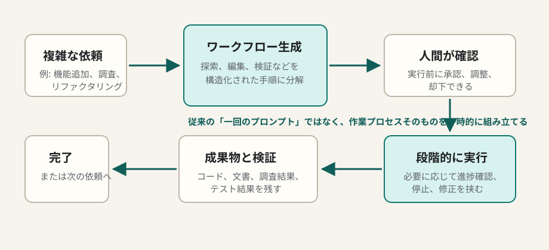

Claude Code / AI開発
Claude CodeのDynamic Workflowsとは何か
Dynamic Workflowsは、Claude Codeが複雑な依頼に対して、その場で作業手順を組み立て、ユーザー承認を挟みながら実行できる研究プレビュー機能です。固定のスラッシュコマンドや常設エージェントを増やすのではなく、依頼ごとに「今回だけの実行計画」を生成する点が特徴です。
簡潔なQ&A
- Q. Claude CodeのDynamic Workflowsとは何ですか？
- A. 複雑なタスクを受けたとき、Claude Codeが探索、編集、検証、報告などの手順を動的に設計し、承認後に実行する仕組みです。2026年5月28日にAnthropicが研究プレビューとして発表しました。
- Q. 普通のプロンプトやカスタムコマンドと何が違いますか？
- A. プロンプトは一回の指示、カスタムコマンドは事前に決めた手順です。Dynamic Workflowsは、タスク内容を見て毎回ワークフローを生成するため、未知の調査や複数段階の実装に向いています。
- Q. いつ使うと有用ですか？
- A. リポジトリ調査を伴う機能追加、テスト込みのバグ修正、技術調査から記事化までの流れ、既存コードに合わせたリファクタリング、複数成果物を作る作業で効果が出やすいです。
- Q. 注意点はありますか？
- A. 研究プレビューなので挙動や提供条件が変わる可能性があります。また、長いワークフローはコストと実行時間が増えるため、承認前に範囲、停止条件、検証方法を確認するのが重要です。

機能の全体像
Anthropicの公式ブログとClaude Code Docsでは、Dynamic Workflowsは「Claude Codeがタスクに合わせてワークフローを生成し、ユーザーが承認してから実行する」機能として説明されています。対象は、単発のコード生成よりも、複数ステップに分かれる開発作業です。
従来のClaude Codeでも、ユーザーが「まず調べて、次に実装して、最後にテストして」と頼むことはできます。Dynamic Workflowsの違いは、Claude Code側が作業の構造を明示的なワークフローとして提案し、それを実行単位にできるところです。人間は「その手順で進めてよいか」「範囲が広すぎないか」「検証は十分か」を確認しやすくなります。
構成要素
| 要素 | 役割 | 実務で見るポイント |
|---|---|---|
| タスク理解 | 依頼の目的、制約、成果物、検証条件を読み取る。 | 曖昧な依頼では、最初にゴールと除外範囲を入れる。 |
| ワークフロー生成 | 調査、編集、テスト、レビュー、報告などを手順化する。 | 手順が大きすぎる場合は小さく分ける。 |
| 承認 | 実行前に人間が計画を確認する。 | コスト、時間、変更対象、実行コマンドを確認する。 |
| 実行と観測 | ファイル探索、コード変更、テスト、ブラウザ確認などを進める。 | 失敗時に再計画できる余地を残す。 |
| 成果物化 | コード、ドキュメント、調査メモ、検証結果として残す。 | 最後に何が変わったか、何を確認したかを残す。 |
有用な使い方
1. 大きな開発タスクを「調査→実装→検証」に分ける
新機能追加や不具合修正では、いきなり編集させるより、まず既存構成を読ませ、次に変更方針を立て、最後にテストや画面確認を行う流れが安定します。Dynamic Workflowsは、この一連の作業をClaude Code側で組み立てられるため、ユーザーが細かいプロンプトを何度も書く負担を減らせます。
2. 調査と成果物作成をつなげる
技術調査、比較表、記事作成、図解作成のように、入力情報の確認とアウトプット整形が混ざる作業にも向いています。公式情報を確認し、要点を整理し、図に落とし込み、HTMLやMarkdownへ反映する、といった流れを一つの作業プロセスとして扱えます。
3. 既存プロジェクトの流儀に合わせる
コードベースごとに、テストの走らせ方、フォーマット、ディレクトリ構成、PRの粒度は違います。Dynamic Workflowsでは、まずリポジトリのルールや既存実装を読み、その上で作業手順を作るように依頼すると、既存の型に合わせた変更になりやすくなります。
4. 人間の承認を「安全装置」として使う
承認ステップは単なる確認画面ではなく、作業範囲を締めるためのポイントです。特に、ファイル削除、依存関係追加、外部API利用、長時間の検証、課金が絡む実行は、承認前に目的と影響を見直すと安全です。
動画の要点
ユーザー指定のYouTube動画「Claude Opus 4.8の『Dynamic Workflows』って機能が素晴らしい！使い方を解説【徹底検証】」（KEITO【AI&WEB ch】）では、公開チャプターとして、概要、Dynamic Workflowの紹介、セットアップ、使い方、ゲーム開発での実践検証、その他の検証事例、ディープリサーチ、LP作成とポータルサイト、セキュリティプラグイン、注意点とコストが並んでいます。
この章立てから読み取れる実践上のポイントは、Dynamic Workflowsを単なるコード生成ではなく、複数ステップの制作・検証プロセスとして試していることです。特に、ゲーム開発やLP作成のような成果物が見える作業、ディープリサーチのような調査量が多い作業、セキュリティ確認のように手順化が重要な作業は、Dynamic Workflowsの価値が出やすい題材です。
| 動画チャプター | 学習メモとしての見どころ |
|---|---|
| Dynamic Workflowの紹介・使い方 | 機能の入口、どのようにワークフローを作らせるか、承認後にどう進むかを確認する部分。 |
| 実践検証: ゲーム開発 | 仕様づくり、実装、動作確認が連続する題材で、ワークフロー化の効果を見やすい。 |
| ディープリサーチ機能 | 情報収集、整理、出典確認、成果物化の流れをワークフローに載せる例として参考になる。 |
| LP作成とポータルサイト | 文章、構成、UI、実装、確認が混ざるWeb制作タスクへの適用例。 |
| セキュリティプラグイン・注意点とコスト | 自動化の便利さだけでなく、実行権限、検証、利用量を管理する必要性を確認する部分。 |
向いているタスクと向かないタスク
| 向いている | 理由 |
|---|---|
| 複数ファイルにまたがる実装 | 調査、設計、編集、テストの順番が重要になるため。 |
| 調査から文書化までの作業 | 情報収集、要約、構造化、出典整理を一つの流れにしやすいため。 |
| UIやゲームなど確認が必要な制作 | 実装後にブラウザ確認やスクリーンショット検証を組み込めるため。 |
| 定型化しきれていない社内作業 | 固定コマンド化する前の試行錯誤を、毎回の状況に合わせて進められるため。 |
一方で、単純な質問、短いコード片の作成、すでに完全に定型化された処理には、通常のプロンプトやカスタムコマンドの方が軽いです。Dynamic Workflowsは、作業の段取り自体に価値がある場面で使うのがよいです。
使うときのプロンプト例
このリポジトリでログイン画面のバリデーションを改善したいです。
まず既存実装とテスト構成を調べ、変更計画を作ってください。
計画を提示して承認を得てから、実装、テスト、変更点の要約まで進めてください。このテーマについて公式情報を確認し、学習用HTML記事にまとめてください。
出典、図解、Q&A、実務上の注意点を含めてください。
古い情報と推測は分けて扱ってください。要点
Dynamic Workflowsは、「Claude Codeに何を作らせるか」だけでなく「どう進めるか」まで任せる機能です。効果が出るのは、探索、判断、編集、検証が混ざる作業です。ただし研究プレビューなので、利用可能条件、UI、挙動は公式ドキュメントで確認しながら使うのが安全です。